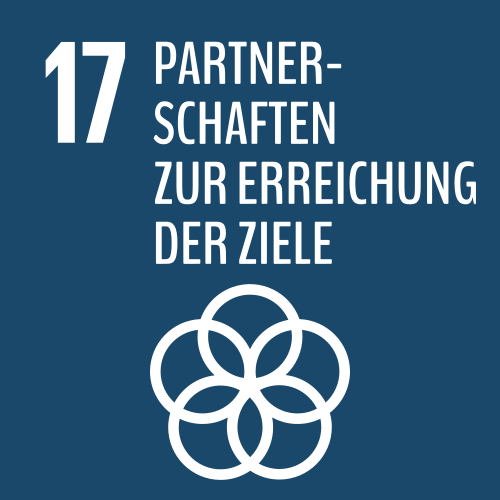

Die 17 Ziele können nur durch eine starke globale Partnerschaft erreicht werden. Regierungen, die Zivilgesellschaft und Unternehmen müssen gemeinsam an ihrer Umsetzung arbeiten. „Niemanden zurücklassen“, ist das Oberprinzip der Agenda 2030. Die UN-Mitgliedstaaten haben sich darauf verpflichtet, diejenigen zuerst zu erreichen, die am weitesten zurückliegen.
Die Mittel für die öffentliche Entwicklungszusammenarbeit sind in den ärmsten Ländern in den letzten Jahren allerdings gesunken. Gerade fünf Länder haben ihr Versprechen für die ODA-Quote – das ist der Anteil der öffentlichen Ausgaben für Entwicklungszusammenarbeit am Bruttonationaleinkommen – von 0,7 Prozent eingehalten. Auch Deutschland erfüllt die ODA-Quote noch nicht, hat seine Ausgaben in den letzten Jahren aber kontinuierlich gesteigert.
Wir können die erste Generation sein, der es gelingt, die Armut zu beseitigen, ebenso wie wir die letzte sein könnten, die die Chance hat, unseren Planeten zu retten.
(Ban-Ki Moon, UN-Generalsekretär von 2007 bis 2016)
